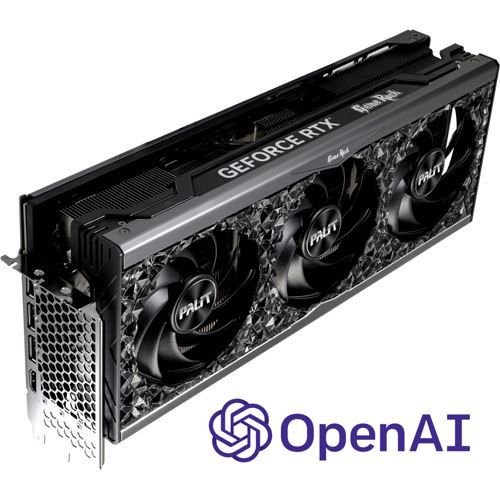
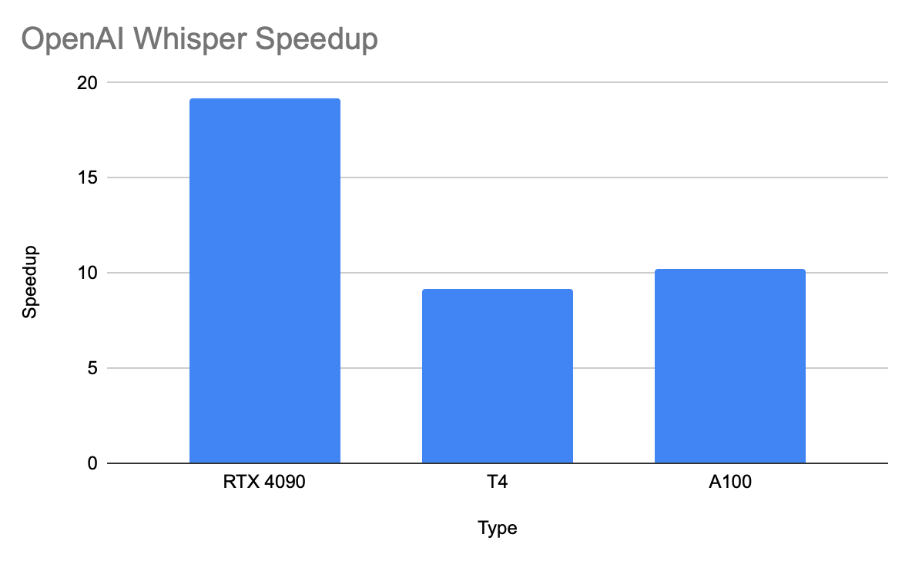

OpenAI Whisper Performance on Nvidia RTX 4090
- 1 min

Short update on my performance series on OpenAI Whisper running on T4 / A100 and Apple Silicon.
I got my hands on a Nvidia RTX 4090 and ran a 3600 seconds audio file through it.
GPU
0
NVIDIA GeForce RTX 4090
Load Model at 2023-03-21 17:22:09.623805
Loading took 0:00:09.574030
started at 2023-03-21 17:22:19.197835
ended at 2023-03-21 17:25:25.905605
time elapsed: 0:03:06.707770
With the large model it makes a ~ 19.3 x speed up. My prediction back then was about 10x but since just 11 MB VRAM was used I estimated 2 processes can be run in parallel. So it would be a 20x speed up. In a different way, but this prediction turned out to be true.

The tiny model just took 33.8 seconds (106x speed up).
Now you know.
Update: Check out my comparison 4090 vs M1Pro and Apple’s MLX Framework